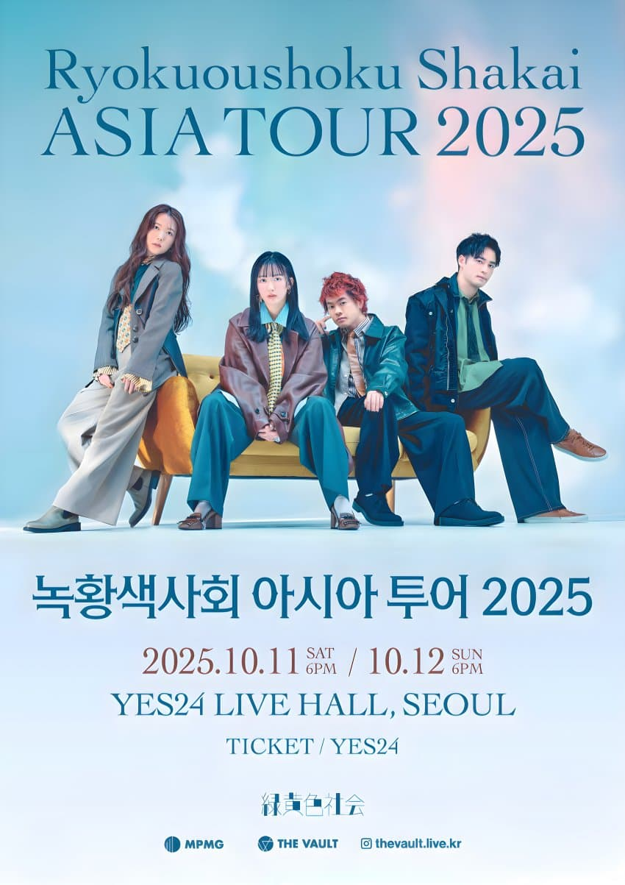

緑黄色社会 · LIVE 예습 노트
녹황색사회 콜 가이드リョクシャカ ライブ予習
라이브에서 관객이 다 같이 하는 동작과 콜을 노래별로 모았어요. 곡 이름을 누르면 콜이 펼쳐지고, 다 외운 부분은 오른쪽 체크를 눌러 두면 이 브라우저에 기억돼요.

2025 내한 세트리스트
두 날은 12번, 14번 곡만 달라요. 콜 보기를 누르면 아래 가이드로 이동해요.
찾는 곡이 없어요. 검색어를 바꿔 보세요.